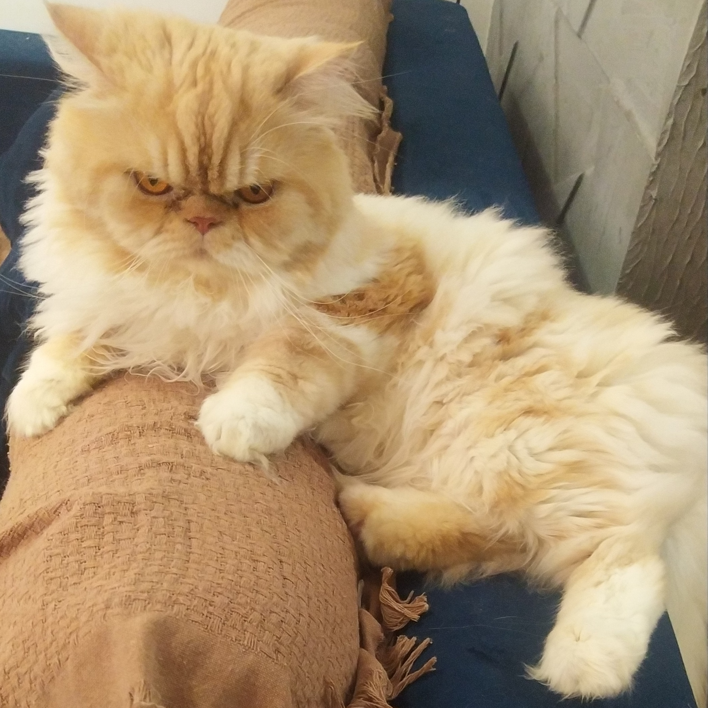
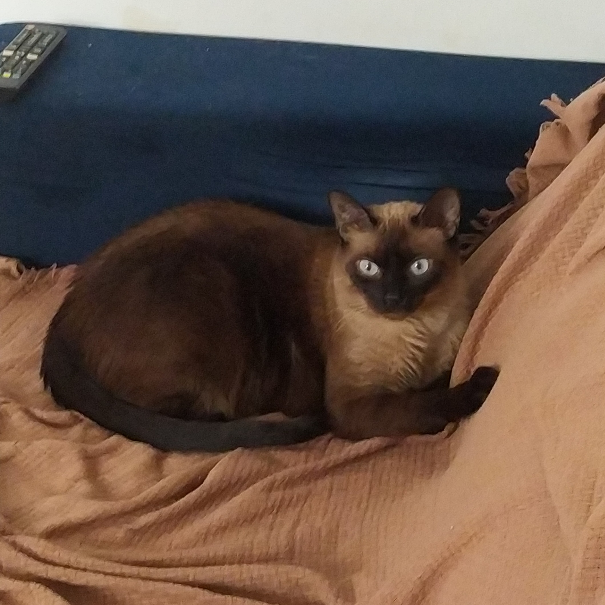

Que comecem os jogos! 🎮🐱
O acesso se dará por meio da chave que se encontra na casa de nossa mãe. O endereço você já sabe, mas não custa reforçar, né? 😅
A chave menor abre o portão de entrada do condomínio, e a outra chave abre o apartamento, nº 105, segundo andar. 🗝️
Para acessar o bloco, assim que passar pelo portão pequeno, siga em frente até o final do corredor. Em seguida, dobre à esquerda. Você sairá na garagem de motos. Vrum-vrum! 🏍️
Caminhe em direção à garagem de carros e pegue a escada que estará à sua direita. Suba até o segundo andar (último). O apartamento é o 105. A diversão começa! 🎉
Entre, a casa é sua! 🏡


Os gatos geralmente comem de manhã cedo, à tarde e à noite, mas cuidado: eles vão tentar te enganar com carinha triste! 🥺
Tom é um verdadeiro manipulador. Ele pede comida o tempo todo, mas quando você coloca, ele come pouco e sai, como se nunca tivesse implorado antes. 😏
Nino é um obeso descontrolado. Ele fica roçando o nariz no saco da ração, suplicando por algumas migalhas. Se ele pudesse, viveria comendo! 😅
As rações são separadas: Tom: Ração para gatos persas. Nino: Ração para gatos castrados.
Os potes também são diferentes: - O pote do Nino fica sobre uma caixa de suporte. - O pote do Tom é uma vasilha menor, azul.
A dosagem da comida do Nino é um punhado de ração. Se ele comer rápido e beber água logo depois, pode vomitar. 🤢
Ah! Os potes de água são esses que estão ao lado de cada comedouro. Mantenha sempre cheios! 💧🐾
Tom é um gato muito introvertido. Ele prefere se esconder em lugares remotos, como debaixo da cama ou em cantos afastados, mesmo que precise ficar sem comer. Por ser peludo, ele adora o frio. À noite, após as 19h, é recomendável ligar o ar condicionado para que ele fique mais confortável. 🌬️❄️
Nino, por outro lado, é a vagabundagem em forma de gato. Ele está sempre atrás de atenção, comida e carinho. Se ele pudesse, viveria pedindo mimos o tempo todo! 😹💖
Os gatos usam o banheiro social, onde há três caixas de areia. No entanto, o Nino não usa nenhuma delas e prefere fazer no chão. Eu recolho os "presentes" dele duas vezes por dia para manter tudo limpo. 🐾
Vou deixar o banheiro limpo para você não ter o trabalho de limpar, mas caso o Nino faça no chão, e se você quiser e puder, é só recolher com a pá dele e jogar no vaso sanitário. 🚽
Para ajudar a eliminar o odor, use desinfetante e água sanitária no local. 💨🧴
O Tom, por ser super educado, se pudesse, limparia a bunda com papel higiênico. 🧻😹
Se precisar de ajuda, entre em contato: (85) 9****-5033(zap).